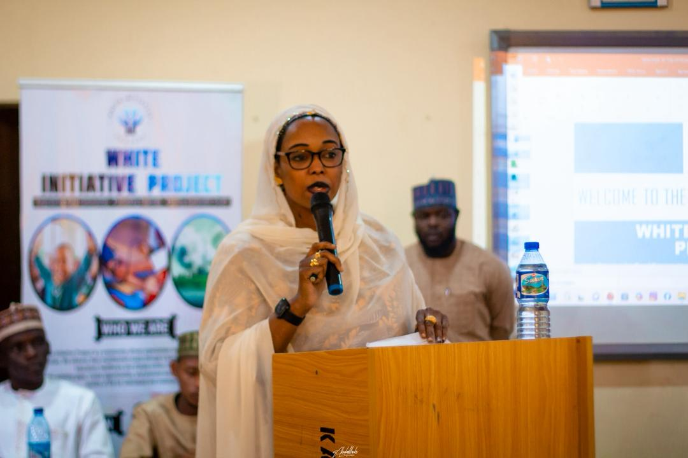

Stories That Drive Change
The Creative Lab empowers young creatives to produce documentaries, podcasts, graphic campaigns, and social media content that raise awareness on education access, gender justice, and digital inclusion. We provide equipment, training, and platforms to share community stories with the world.
Media ProductionVideo, audio, and photography training
Storytelling WorkshopsNarrative skills for advocacy and awareness
Social Campaigns45,000+ social media engagements in 2024
Creative Fellowships6 month residencies for emerging artists
